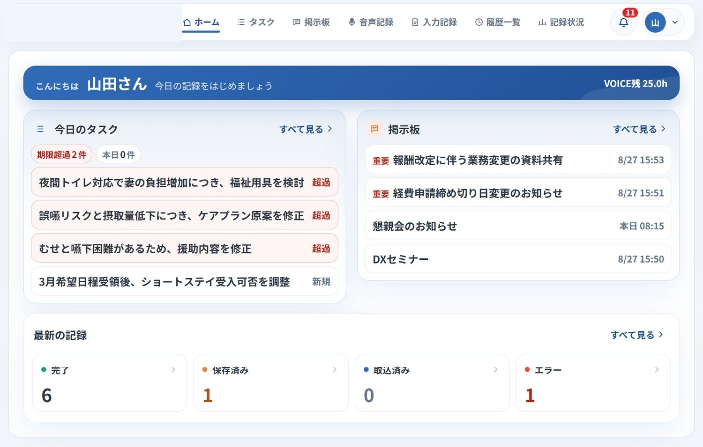
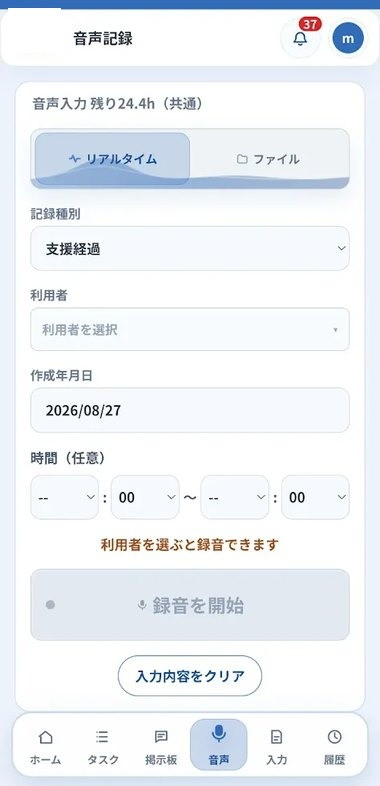
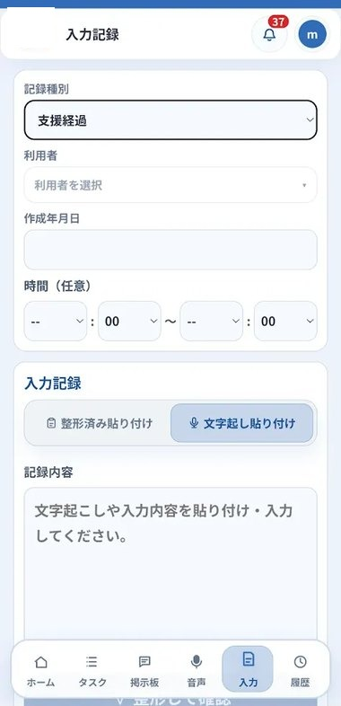
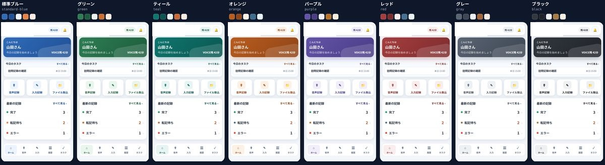
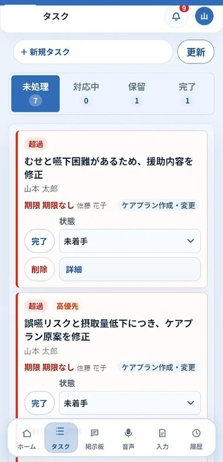
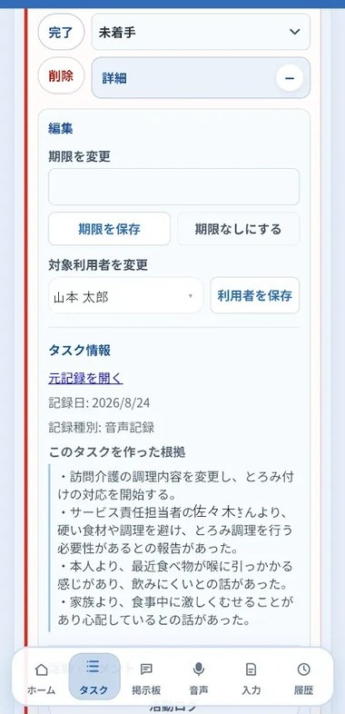

Wonderwallが、システム開発企業とタッグを組んで開発中のアプリ
話す・入力するだけで記録が整い、事業所のPCが介護ソフトへ自動で転記します。

実際の画面です。表示内容は説明用のもので、実在の事業所・利用者の情報ではありません。（2026年8月時点の仕様）
記録に向き合う時間が、少しずつ増えていませんか。経過記録、担当者会議の議事録、そして最後に待ち受ける介護ソフトへの転記——。 こうした"見えない残業"が、ケアマネジャーの時間と心をじわじわとすり減らしています。
経過記録や担当者会議の記録を書いた後、さらに介護ソフトへの入力が待っている。同じ内容を何度も書き直す時間は、本来、利用者のために使えるはずです。
届いた順番に積み上がるFAX。1枚ずつの仕分け、リネーム、フォルダへの格納——地道で時間のかかる作業が、毎日繰り返されています。
そもそも、AIで記録を整形している事業所自体がまだ少ないのが現状です。それでも——AIを活用できていたとしても、最後の介護ソフトへの転記が残る限り、時間短縮には限界があります。
終業後まで持ち込まれる記録作業。本来の「人と向き合う仕事」に集中できる時間を、取り戻したい——そう感じる瞬間がありませんか。
職員が話す・入力するだけで記録案ができ、AIが介護記録の書式に整えます。 職員が確認・修正して確定した記録は、事業所の転記用PCが介護ソフトへ自動で入力します。
入力からAI整形、職員の確認、自動転記、結果確認まで。5つのステップで記録が完結します。
スマートフォンやPCで話す、
またはフォームに入力する
文字起こしと記録書式への整形を自動で行う
画面で内容を確認・修正し、記録を確定する
事業所の転記用PCが介護ソフトへ入力する
成功・失敗が履歴に残り、
失敗は理由付きで通知される
動画で見る：音声記録の始め方（全10ステップ）
音声で記録する方法と、フォームで入力する方法。どちらも同じ仕組みで介護ソフトへ自動入力できます。事業所ごとに、使う構成を選べます。


| セット | 構成 | 想定する使い方 |
|---|---|---|
| A1 | 音声記録のみ（保存まで） | 介護ソフトへの転記は使わない |
| A2 | 音声記録＋介護ソフトへの転記 | 話した内容が介護ソフトまで自動で入る |
| B | フォーム入力＋介護ソフトへの転記 | 決まった項目を入力し、自動転記する |
| A2+B | すべて | 記録の種類によって使い分ける |
選んだセットに応じて、利用できる機能が切り替わります。
| 記録を作る | 音声アップロード／リアルタイム音声入力／Web・スマートフォンのフォーム入力 | 音声は wav・mp3・m4a・ogg・webm に対応。1ファイル150MB・1音声300分まで |
| 記録を整える | AIによる記録整形／整形結果の手動修正／音声での修正指示 | 整形の書式は記録種別ごとに設定。職員が確認して確定します |
| 介護ソフトへ入れる | 転記予約／自動転記／支援経過・担当者会議など画面別の入力／利用者・担当者マスタの同期 | 事業所内の転記用PCが実行。介護ソフトの画面構成は事業所設定に合わせて切替 |
| 確認・運用 | 記録の履歴／CSVエクスポート／転記エラーの理由表示／スマートフォンへの通知 | 失敗した転記は理由コード付きで残り、当社の管理画面からも追跡します |
| 事業所内の共有 | 掲示板（お知らせの投稿・一覧・詳細・コメント／ファイル添付・外部リンク） | 重要な投稿はスマートフォンへ通知。個別利用者の記録を共有する場所には使いません |
| 利用量の管理 | 職員ごとの月間音声利用枠（既定：月25時間） | アップロードとリアルタイムで同じ枠を消費。枠は事業所・職員単位で調整可能 |
職員が毎日開く画面の色・ロゴ・アプリ名を、事業所に合わせて設定できます。設定は当社にて承ります。

用意しているテーマカラー（標準ブルー／グリーン／ティール／オレンジ／パープル／レッド／グレー／ブラック）を職員のホーム画面に適用した例です。実際の画面です。表示内容は説明用のもので、実在の事業所・利用者の情報ではありません。
上記8色から選択。ヘッダー、ボタン、状態表示までまとめて切り替わります。
事業所のロゴをアプリのアイコンに設定できます。ホーム画面に追加したときのアイコンにも反映されます。
職員の画面に出る名称を事業所名や通称に変更できます（事業所コードとURLは変わりません）。
標準セットには含まれません。ご契約に応じて事業所単位で有効化します。


実際の画面です。利用者名・職員名は仮名に差し替えています。
扱うのは、利用者様の生活そのものに関わる情報です。開発中であっても、セキュリティは最優先で設計しています。
動画で見る：ログイン方法とセキュリティ設定の確認（全8ステップ）
記録入力を行う端末と、介護ソフトへの自動転記を行うPCは別に必要です。
導入後に起こりうる事象と、その際の当社対応を隠さずご説明します。
| 起こりうる事象 | 影響 | 当社および事業所の対応 |
|---|---|---|
| 介護ソフト側の画面仕様変更 | 自動転記が一時停止します。記録の作成・保存は継続できます | 当社が検知して転記を止め、対応版を配布します。復旧までは手入力へ切り替えていただきます（復旧時間は外部システム側の変更内容によるため保証できません） |
| 保存できたか判別できない転記 | 該当記録の転記が保留になります | 二重登録を防ぐため自動で再実行しません。介護ソフトの画面で保存有無をご確認いただき、結果に応じて再実行します |
| 転記用PCの停止・ネットワーク断 | 停止中は転記が進みません | 当社の管理画面で端末の稼働状況を監視します。長時間停止時はご連絡し、必要に応じて端末の入れ替え手順をご案内します |
| 介護ソフトのログイン失敗・アカウントロック | 自動転記が失敗します | 当社はID・パスワードを閲覧しないため、事業所側で再入力いただきます。当社はエラー内容と失敗箇所をお伝えします |
| インストール時の警告表示 | 初回インストール時にWindowsのSmartScreen警告が出ます | 現時点では想定された挙動です（配布本数が一定数に達した段階でコード署名の導入を予定）。以降の自動更新は署名検証を行います |
| AI整形の内容 | 整形結果が意図と異なる場合があります | 確定前に必ず職員が確認・修正する運用を前提としています。記録内容の最終責任は事業所側にあります |
介護ソフトへの転記だけでなく、FAXや紙書類の処理も、あわせて開発を進めています。
私たちは、まだ開発の途中にいます。
完成品を届けるのではなく、現場の声で完成させたい——
そんな思いで、一緒に使い、フィードバックをくれる仲間を探しています。
「こんな機能が欲しい」「ここが使いにくい」——
ケアマネジャーとしての声が、道具を本当に現場に合ったものにしてくれます。
一方的に使ってもらうのではなく、一緒に育てていきたいと考えています。
ご応募・お問い合わせは、共通の相談フォームから受け付けています。
「まずは話だけ聞いてみたい」という段階でも、ぜひお気軽にどうぞ。
3営業日以内にご連絡いたします。